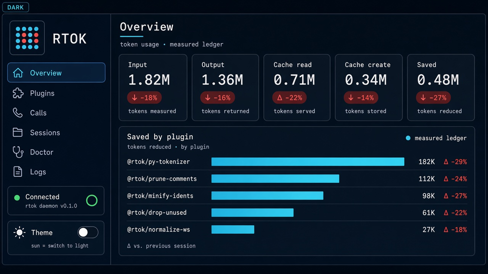
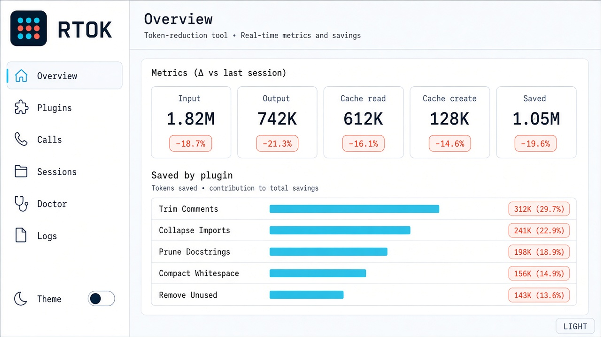
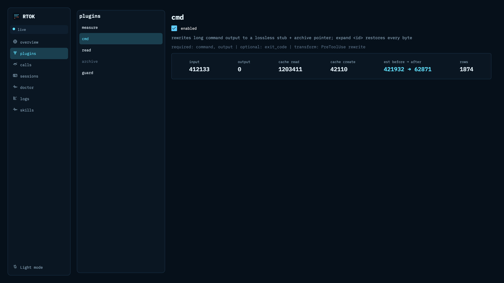
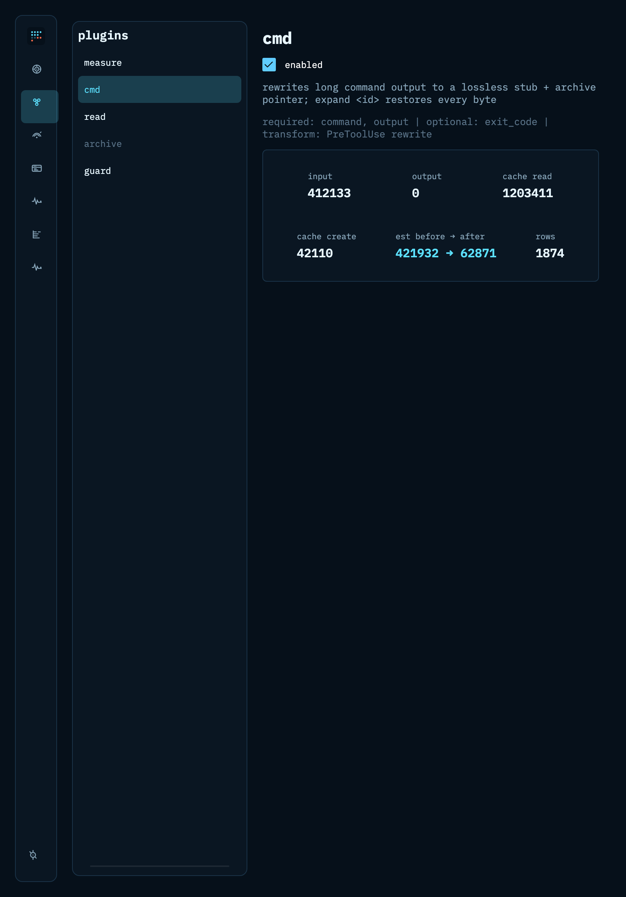
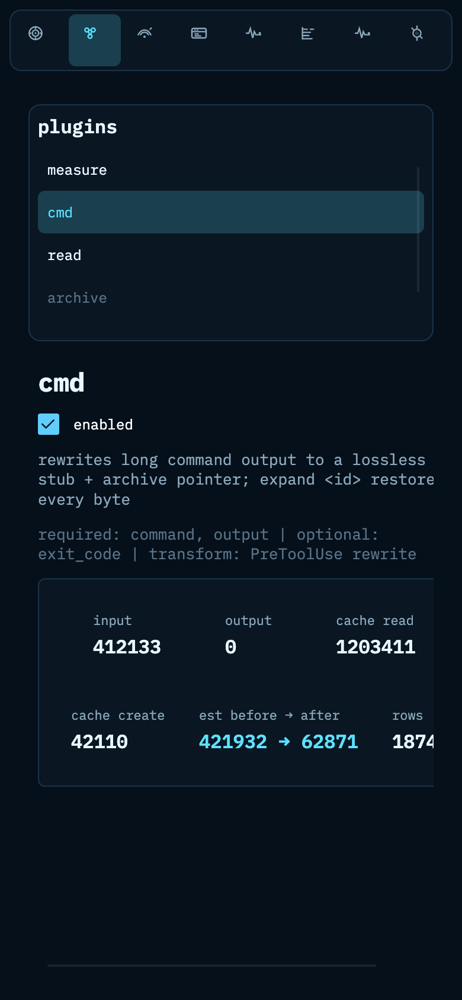

Token reduction for AI coding agents
One Rust binary. Hooks, MCP, and a proxy hop — every saving is a ledger row, and everything shortened expands back by id.


Features
Measured, not claimed
If it is not a Measurement row, it did not happen. rtok stats shows the Δ — tokens before, after, and why.
One binary, three surfaces
Claude Code hooks, an MCP server, and an ANTHROPIC_BASE_URL proxy — one process, one ledger, no tool sprawl.
Lossless by default
Shortened context is archived on disk. Bring it back with rtok expand <id> when the agent needs the full payload.
Fails open
Hooks exit 0 in under 10 ms even on error, with input unchanged. A half-installed rtok never blocks the host.
Plugin toolkit
Public Plugin trait and in-tree modules behind Cargo features. No daemon, no subprocesses, no WASM.
Signal-scope UI
Dark/light webui: bitset mark, scope icons, Overview → Logs. See savings as a ledger, not a marketing claim.
Same ledger on every screen
Desktop, tablet and phone renders of the Slint webui (site/static/images, not used by the live site yet).


